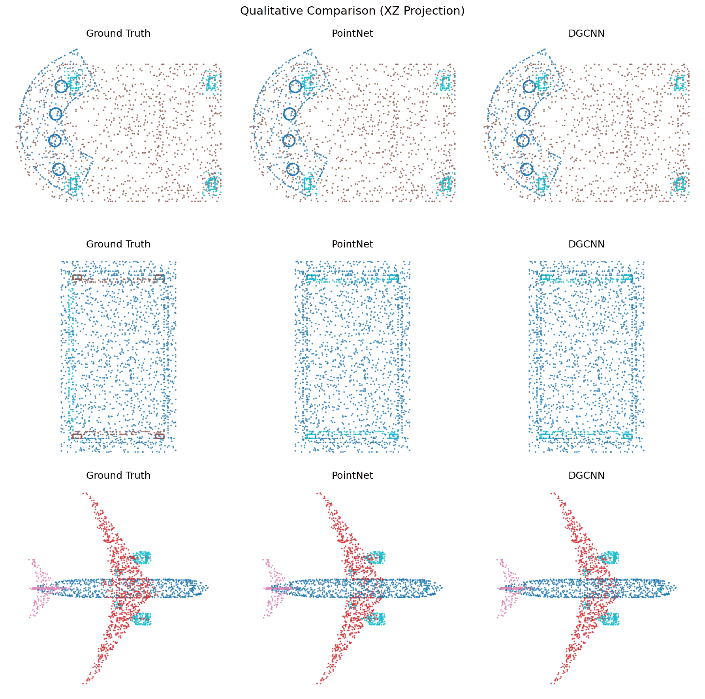
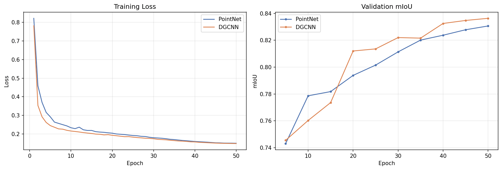
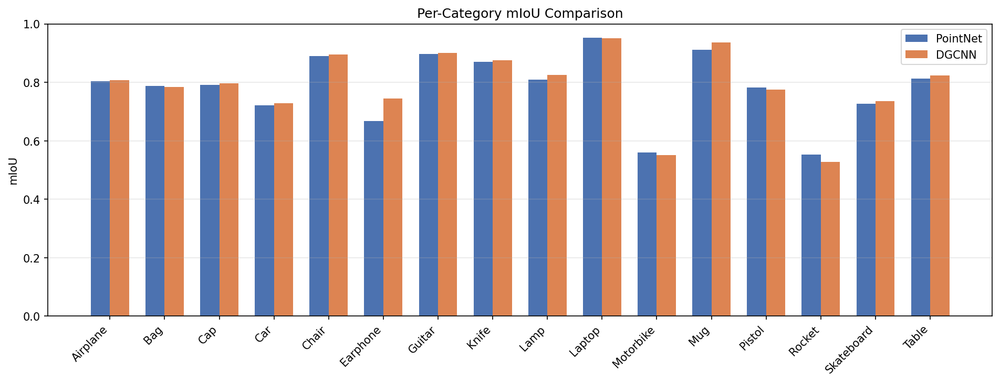

Deep Learning & Perception
3D Point-Cloud Part Segmentation
PointNet and DGCNN trained and compared for part segmentation on ShapeNet across 16 object categories, with DGCNN reaching 83.6% mIoU versus 82.9% for PointNet.

The Problem
Placeholder
Placeholder
Approach
Placeholder
- Trained PointNet and DGCNN for part segmentation on ShapeNet across 16 object categories
System diagram or CAD view
Results
Placeholder
- DGCNN reached 83.6% mIoU versus 82.9% for PointNet
- Analyzed per-category and qualitative results, finding DGCNN’s EdgeConv neighborhood aggregation improved segmentation at part boundaries while PointNet led in 6 of 16 categories


What It Means
Placeholder